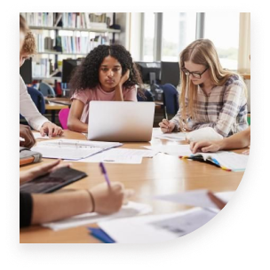
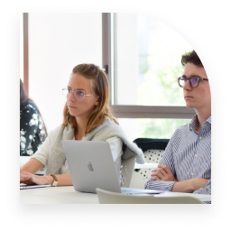
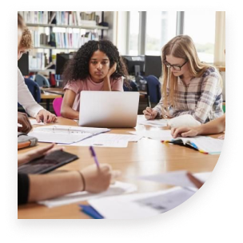
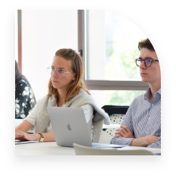

L'association étudiante "Rendre un travail propre" a pour objectif principal d’accompagner les étudiants dans l'amélioration de la qualité de leurs travaux académiques. Dans cette optique, son site web se veut un outil central pour soutenir les membres dans leurs démarches de rédaction, de révision et de présentation soignée de leurs travaux. Ce site, conçu pour être à la fois informatif et fonctionnel, propose une interface conviviale et bien structurée, visant à favoriser l'engagement des étudiants tout en répondant à leurs besoins pratiques. À travers plusieurs fonctionnalités, il guide les utilisateurs vers les ressources et services essentiels pour garantir des rendus académiques impeccables. Voici un aperçu des principales sections et fonctionnalités de ce site.
Vous avez des questions ?
Contactez-nous !
+33 06 12 34 56 78
 



Nous comprenons que la gestion du temps est cruciale dans le travail académique. C'est pourquoi nous
proposons des outils et des guides pratiques pour vous aider à planifier efficacement vos projets. Nos
ressources vous apprendront à décomposer les projets complexes, à établir des objectifs réalistes et à
maintenir une routine de travail productive. Pour ceux qui souhaitent un accompagnement plus
individualisé, nous proposons également des séances de coaching sur la gestion du temps et du stress
académique.
Notre mission est de vous aider à produire des travaux de haute qualité tout en développant votre
autonomie et vos compétences académiques.
DEVENEZ L'UN DES NÔTRES !
Les membres de notre association
Notre équipe est notre principale richesse : des étudiants passionnés, compétents et déterminés à aider
leurs camarades à exceller dans leur parcours académique.
La qualité de votre travail est notre priorité. Notre service de relecture offre une correction approfondie de vos documents, en portant une attention méticuleuse à la grammaire, à l'orthographe et au style. Vous pouvez facilement soumettre vos travaux via notre plateforme en ligne sécurisée. Nous garantissons des délais de correction rapides : entre 48 et 72 heures pour une relecture standard, et jusqu'à une semaine pour des corrections plus approfondies.
Pour vous aider à progresser, nous organisons des ateliers tant en ligne qu'en présentiel. Ces sessions interactives couvrent des thématiques essentielles comme l'écriture académique, les techniques de recherche documentaire, et la préparation aux soutenances. Nos webinaires sont accessibles à tout moment, et nos ateliers en petit groupe permettent un accompagnement personnalisé par nos experts.
Notre association propose un accompagnement complet pour vous aider à rédiger des travaux académiques irréprochables. Nous mettons à votre disposition des guides détaillés qui vous guideront pas à pas dans la construction de vos dissertations, mémoires et rapports de projet. Ces ressources incluent des conseils précis sur la structure, l'argumentation et la présentation des documents. Nous avons également constitué une bibliothèque de modèles qui vous serviront de référence pour comprendre les attentes académiques dans différentes disciplines.
Chaque membre de l'association apporte des compétences uniques. Certains excellent dans la correction grammaticale, d'autres dans la méthodologie de recherche ou la gestion de projet. Nous avons des spécialistes de la mise en page, des experts en citations académiques et des formateurs en gestion du stress.
Au-delà de leurs compétences techniques, nos membres partagent des valeurs fondamentales : l'entraide, la bienveillance et l'amélioration continue. Ils sont convaincus que chaque étudiant a le potentiel de produire un travail remarquable, et leur mission est de l'accompagner dans cette réalisation.
Rejoindre notre association n'est pas chose facile. Nous sélectionnons nos membres avec soin, en évaluant non seulement leurs compétences académiques, mais aussi leur capacité à communiquer, à conseiller et à inspirer.
The National Hookah Community Association (NHCA) is a 501(c)6 non-profit organization that protects and serves its members who are facing threats from new legislation at the local, state, and federal level.
Rejoindre "Rendre un travail propre", c'est adhérer à des valeurs fortes : l'entraide, l'excellence, la bienveillance et le partage des connaissances. C'est faire partie d'une communauté qui croit en la réussite de chacun.